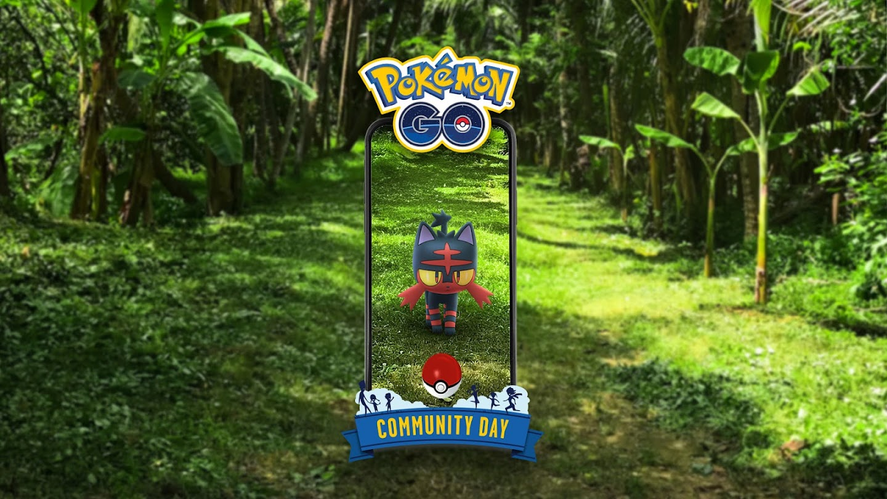

Dia Comunitário de março de 2024: Litten
por Danilo Andretta - 29/02/2024
A Niantic anunciou que Litten será o Pokémon em destaque no evento de Dia Comunitário de março no Pokémon GO! Durante o evento, os jogadores poderão encontrar Litten Shiny com mais frequência. Confira os destaques a seguir:
Data e Hora
Sábado, 16 de março de 2024, das 14h às 17h, horário local.
Bônus do evento
Os seguintes bônus estarão ativados durante o evento:
3x mais PE por capturar Pokémon.
2x mais doces por capturar Pokémon.
2x mais chance de Treinadoras e Treinadores do nível 31 ou superior receberem doce GG por capturar Pokémon.
Os Módulos Atrair ativados durante o evento durarão três horas.
O Incenso (exceto o Incenso de Aventura Diário) ativado durante o evento vai durar três horas.
Tire fotos durante o Dia Comunitário para ter uma surpresa!
Pode ser feita uma troca especial adicional (máximo de duas por dia).
As trocas exigirão 50% menos Poeira Estelar.
Outros destaques
Os jogadores também poderão aproveitar:
Evolua Torracat (evolução de Litten) durante o evento ou até cinco horas depois para conseguir um Incineroar que conhece o ataque carregado Queimadura Explosiva.
Começando no evento e continuando depois, Incineroar poderá aprender o ataque carregado Lariat Escuro.
Por R$1,90, os jogadores poderão acessar a história de pesquisa especial exclusiva do Dia Comunitário de Litten.
Haverá pesquisas de campo exclusivas do evento.
Haverá Vitrines exclusivas do Dia Comunitário do Litten
Adesivos exclusivos do evento estarão disponíveis em Poképaradas, presentes e na loja do jogo.
Batalhas de Reide após o Dia Comunitário
Após o término do evento do Dia Comunitário, os jogadores poderão participar de Batalhas de Reide especiais de quatro estrelas para enfrentar Torracat. Ao derrotá-lo, mais Litten aparecerão ao redor do Ginásio que recebeu a Reide por 30 minutos! Os Passes de Reide a Distância não podem ser usadas nessas reides.
As chances de encontrar um Litten Brilhante nestas condições é a mesma do evento de Dia Comunitário. Os treinadores poderão enfrentar Torracat em reides até às 22h.